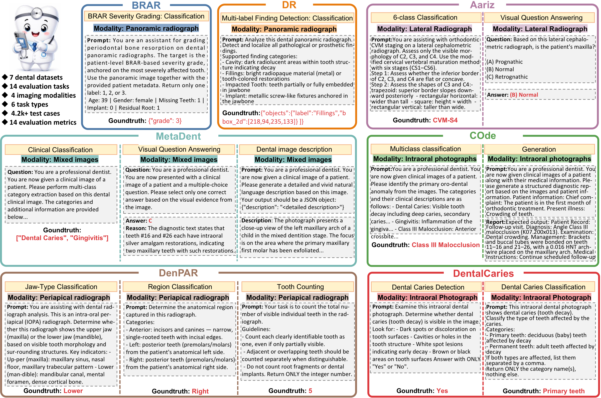
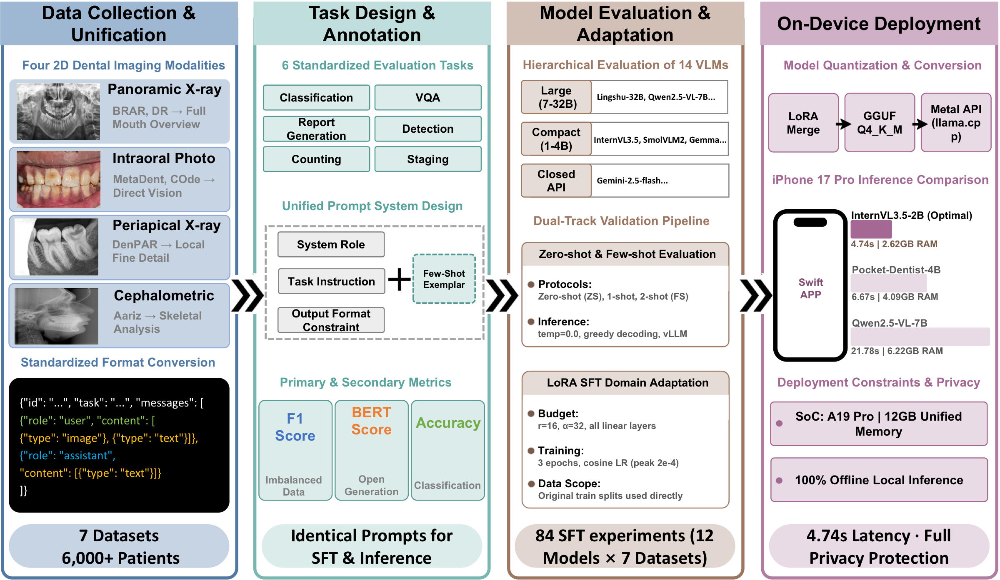
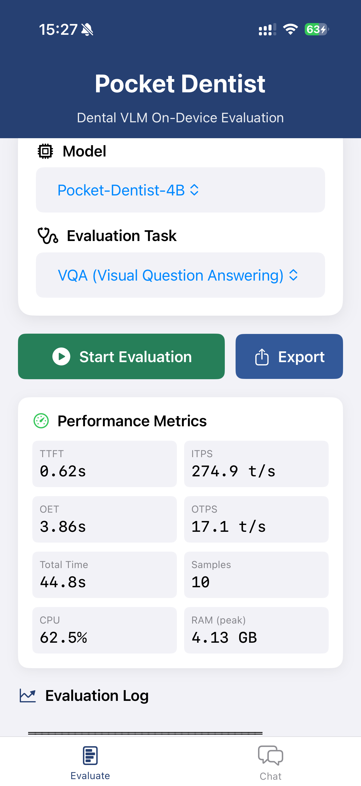

Abstract
Dental image understanding is emerging as an important application area for VLMs, but current evaluation remains fragmented across modality-specific datasets, isolated task definitions, and metrics that rarely account for deployment constraints. As a result, it remains unclear whether VLMs can provide reliable dental image understanding across heterogeneous modalities and tasks while remaining practical for resource-constrained deployment. We present Pocket-Dentist, a large-scale multimodal benchmark and deployment pipeline for dental VLMs. We curate and standardize seven dental datasets into a unified vision–language benchmark comprising more than 6,000 patients, 71,000 images, four imaging modalities, six task types, and 14 evaluation metrics. On this benchmark, we evaluate 14 VLMs under zero-shot, few-shot, and LoRA fine-tuning settings, including 12 open-weight models under a uniform LoRA adaptation budget. The results show that zero-shot and few-shot performance is fragmented across modalities and tasks, whereas dental-domain LoRA adaptation enables compact VLMs to become competitive with substantially larger models. In particular, Qwen3-VL-4B achieves the strongest overall performance among compact models and matches or outperforms larger open-weight models (7B–32B) on most primary task metrics. We further deploy a LoRA-tuned Qwen3-VL-4B (Pocket-Dentist-4B) on a commodity smartphone, achieving 6.67s per-sample inference while keeping all computation local to the device.
Benchmark Overview

Figure 1: Overview of the Pocket-Dentist benchmark datasets and task formulations.
Evaluation Pipeline

Figure 2: Deploy-aware evaluation pipeline of Pocket-Dentist.
Zero-Shot Benchmark Results
Bold blue = best in tier. ↑ higher is better; MAE ↓ lower is better.
| Tier | Model | BRAR Acc↑ | BRAR F1↑ | DR F1w↑ | Meta VQA↑ | Meta Cap↑ | Meta Cls↑ | Aariz VQA↑ | Aariz CVM↑ | COde Cls↑ | DenPAR Arch↑ | DenPAR Site↑ | DenPAR MAE↓ | Caries Det↑ | Caries Cls↑ |
|---|---|---|---|---|---|---|---|---|---|---|---|---|---|---|---|
| Large VLMs (≥7B) |
Lingshu-32B | 0.49 | 0.39 | 0.60 | 0.63 | 0.18 | 0.34 | 0.26 | 0.13 | 0.48 | 0.59 | 0.53 | 0.88 | 0.56 | 0.16 |
| MedMO-8B-Next | 0.26 | 0.19 | 0.53 | 0.49 | 0.09 | 0.08 | 0.21 | 0.05 | 0.26 | 0.61 | 0.29 | 2.90 | 0.59 | 0.84 | |
| Qwen2.5-VL-7B | 0.27 | 0.17 | 0.32 | 0.45 | 0.15 | 0.23 | 0.20 | 0.00 | 0.50 | 0.40 | 0.35 | 1.01 | 0.63 | 0.14 | |
| gemini-2.0-flash | 0.57 | 0.37 | 0.00 | 0.63 | 0.18 | 0.36 | 0.29 | 0.25 | 0.54 | 0.84 | 0.45 | 0.42 | 0.50 | 0.12 | |
| gemini-2.5-flash | 0.27 | 0.26 | 0.62 | 0.66 | 0.14 | 0.24 | 0.23 | 0.12 | 0.58 | 0.99 | 0.51 | 0.47 | 0.54 | 0.13 | |
| Compact VLMs (≤4B) |
Qwen3.5-4B | 0.17 | 0.10 | 0.54 | 0.82 | 0.10 | 0.16 | 0.17 | 0.04 | 0.11 | 0.40 | 0.19 | 3.02 | 0.49 | 0.18 |
| Qwen3-VL-4B | 0.44 | 0.37 | 0.24 | 0.58 | 0.20 | 0.22 | 0.23 | 0.08 | 0.54 | 0.44 | 0.23 | 0.42 | 0.63 | 0.58 | |
| gemma-4-E4B-it | 0.56 | 0.24 | 0.61 | 0.59 | 0.18 | 0.31 | 0.31 | 0.04 | 0.51 | 0.40 | 0.51 | 0.52 | 0.43 | 0.30 | |
| medgemma-4b-it | 0.44 | 0.33 | 0.57 | 0.54 | 0.14 | 0.16 | 0.40 | 0.03 | 0.27 | 0.40 | 0.23 | 0.89 | 0.52 | 0.11 | |
| paligemma2-3b | 0.10 | 0.06 | 0.00 | 0.00 | 0.00 | 0.00 | 0.20 | 0.03 | 0.00 | 0.00 | 0.18 | 0.89 | 0.64 | 0.00 | |
| SmolVLM2-2.2B | 0.56 | 0.35 | 0.56 | 0.00 | 0.10 | 0.15 | 0.23 | 0.05 | 0.10 | 0.60 | 0.10 | 0.89 | 0.44 | 0.92 | |
| InternVL3.5-2B | 0.50 | 0.27 | 0.09 | 0.15 | 0.00 | 0.00 | 0.37 | 0.00 | 0.14 | 0.40 | 0.22 | 3.21 | 0.36 | 0.12 | |
| gemma-4-E2B-it | 0.56 | 0.24 | 0.24 | 0.48 | 0.15 | 0.25 | 0.39 | 0.03 | 0.50 | 0.27 | 0.23 | 0.73 | 0.61 | 0.11 | |
| InternVL3.5-1B | 0.26 | 0.14 | 0.62 | 0.34 | 0.00 | 0.00 | 0.21 | 0.07 | 0.14 | 0.28 | 0.19 | 2.27 | 0.61 | 0.11 |
On-Device Deployment
LoRA-tuned VLMs deployed on iPhone 17 Pro (A19 Pro, 12 GB) via Metal-accelerated inference. 100% local.
| Model | Latency (s) ↓ | TTFT (s) ↓ | OTPS (t/s) ↑ | RAM (GB) ↓ |
|---|---|---|---|---|
| Pocket-Dentist-4B | 6.67 | 1.22 | 17.07 | 4.09 |
| InternVL3.5-2B | 4.74 | 0.78 | 29.47 | 2.62 |
| Qwen2.5-VL-7B | 24.06 | 2.29 | 9.60 | 6.22 |

Key Findings
- 🔍 Zero-shot fragmentation — No single model dominates across all dental tasks.
- 📈 LoRA adaptation closes the gap — Compact VLMs become competitive with larger models.
- 🏆 Qwen3-VL-4B is the strongest compact model — Matches or outperforms 7B–32B models after LoRA.
- 📱 Pocket-Dentist-4B runs locally — 6.67s latency, 4.09 GB RAM, 100% offline on iPhone 17 Pro.
- 🏥 Medical pre-training ≠ dental performance — Dental-domain LoRA is more effective.